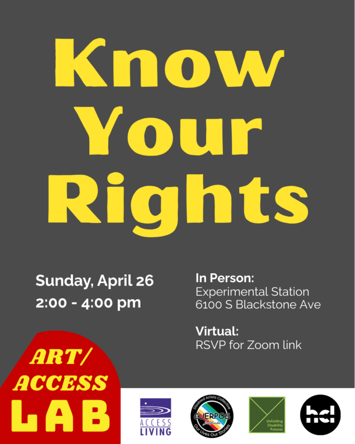

Art/Access Lab: Know Your Rights
Presented in Partnership with Access Living & Cuerpos Justificados
Art/Access Labs foster a vibrant disabled artist ecosystem through cross-discipline and cross-impairment professional development activities.
Guest Presenter:
Chris Ramos, Community Development Organizer, Latinx and Immigration, Access Living
Guest Artists:
William Estrada
Genevieve Ramos
Online Facilitator: